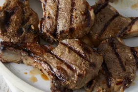

Herb-Crusted Rack of Lamb with Roasted Vegetables

Description
This recipe features a flavorful herb crust on a juicy rack of lamb, complemented by roasted vegetables for a complete meal.
Ingredients
- 1 rack of lamb (6-8 ribs)
- 2 tablespoons Dijon mustard
- 2 tablespoons olive oil
- 4 cloves garlic, minced
- 1 tablespoon chopped fresh rosemary
- 1 tablespoon chopped fresh thyme
- 1/2 teaspoon dried oregano
- Salt and freshly ground black pepper
- 1 small red onion, quartered
- 2 carrots, peeled and chopped
- 1 head of broccoli, cut into florets
Steps
- Prepare the Herb Crust: In a small bowl, combine Dijon mustard, olive oil, minced garlic, rosemary, thyme, oregano, salt, and pepper.
- Season the Lamb: Pat the lamb rack dry with paper towels. Season generously with salt and pepper on all sides.
- Coat with Herb Crust: Spread the prepared herb mixture evenly over the entire surface of the lamb rack, pressing it gently to adhere.
- Preheat the Oven: Preheat your oven to 400°F (200°C).
- Roast the Lamb and Vegetables: In a roasting pan, arrange the chopped vegetables (red onion, carrots, broccoli) around the lamb rack. Drizzle the vegetables with olive oil and season with salt and pepper. Place the lamb rack on top of the vegetables. Roast for 25-30 minutes, or until the lamb reaches desired doneness (internal temperature of 145°F (63°C) for medium-rare). Baste the lamb occasionally with pan drippings during roasting.
- Rest and Serve: Transfer the lamb rack to a plate and let it rest for 10 minutes before carving. This allows the juices to redistribute for a more tender result. Carve the lamb into individual chops and serve with roasted vegetables and pan drippings.